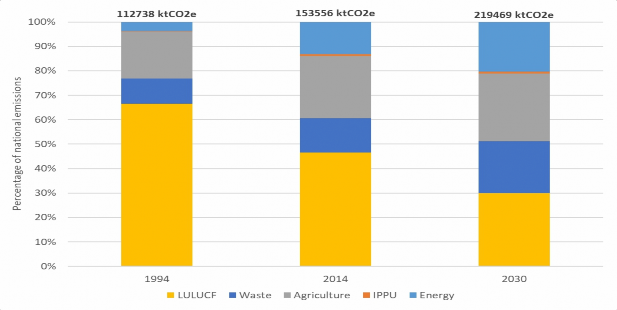
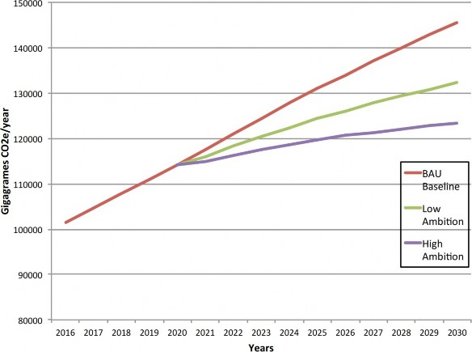
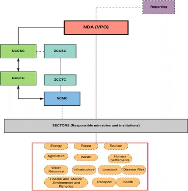
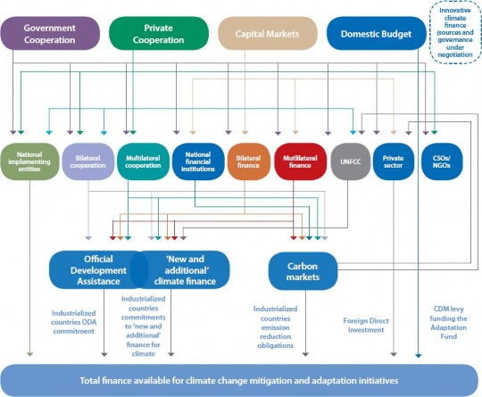

NATIONALLY DETERMINED CONTRIBUTIONS (NDCs)
Tanzania is already affected by climate change and variabilities, with extreme events such as droughts and floods causing major economic costs, reducing long-term growth, and disrupting livelihoods of both rural and urban communities. Climate change impacts are affecting agricultural production, water resources, marine and coastal zones, public health, energy supply and demand, infrastructure, biodiversity, and ecosystem services. Current climate vulnerability and future climate change impacts are significant enough to curtail Tanzania from achieving key economic growth, sustainable development, and poverty reduction targets. This Tanzania’s nationally determined contribution (NDC) provides a set of interventions on adaptation and mitigation, which are expected to build country resilience to the impacts of climate change and contribute to the global effort of reducing greenhouse gases (GHG) emission.
This NDC is in line with Article 4 of the Paris Agreement, which establishes a 2oC above pre-industrial levels and pursuing efforts to limit the temperature to 1.5oC. Also, it builds on the National Climate Change Response Strategy (2021), the Zanzibar Climate Change Strategy (2014), and other national climate change and development frameworks. The two strategies are aimed to give guidance to stakeholders in the effort to enhance adaptive capacity to climate change in order to support long-term climate resilience of social systems and ecosystems, and to enhance participation in climate change mitigation activities to contribute to international efforts while ensuring sustainable development.
An extensive consultative process involving relevant sectors and stakeholders, under the coordination of the Vice President’s Office, Division of Environment has been crucial in developing country’s commitments presented in this NDC.
The NDC will be implemented as Tanzania’s incremental contribution beyond the current efforts and upon availability of adequate and predictable financial and technological support from the international community. The United Republic of Tanzania is committed to effectively meet the objectives of the NDC and engage in national and international processes to fast-track its implementation. The United Republic of Tanzania commits to reduce greenhouse gas emissions economy-wide between 30-35% relative to the Business-As-Usual (BAU) scenario by 2030. I therefore, call upon all stakeholders to participate effectively in implementing the commitments in this NDC.
Hon. Selemani Said Jafo (MP)
The preparation of this nationally determined contribution (NDC) would have not been successful without participation, cooperation, commitment and hard work of many stakeholders and experts in both public and private sectors, and we would like to acknowledge their collective efforts and dedications.
We would like to thank all the relevant ministries, departments, and agencies (MDAs), local government authorities (LGAs), research and academic institutions, and civil society organizations (CSOs) for their active participation throughout the process. Their proactive commitment to contribute in the collection of the baseline information, in the consultations, and in building a national consensus captures the national interest towards addressing the challenges of climate change.
On a special note, we would like to register our heartfelt thanks for the NDC Task Team for the tireless efforts in coordinating this critical exercise despite challenges such as the COVID-19 pandemic.
We wish also to thank the development partners, especially the European Union through the United Nations Development Programme (UNDP), German Society for International Cooperation (GIZ), Climate Action Network (CAN), and Forum for Climate Change (ForumCC) for their financial and technical contributions that led to the finalization of this NDC document.
Ms. Mary N. Maganga
|
BAU |
Business-As-Usual |
|
BUR |
Biennial Update Report |
|
CDM |
Clean Development Mechanism |
|
COP |
Conference of the Parties |
|
CSOs |
Civil Society Organizations |
|
DPs |
Development Partners |
|
ForumCC |
Forum for Climate Change |
|
FVPO |
First Vice President’s Office (Zanzibar) |
|
GDP |
Gross Domestic Product |
|
GHG |
Greenhouse Gases |
|
GIZ |
Germany Corporation for International Cooperation |
|
GWPs |
Global Warming Potentials |
|
HDI |
Human Development Index |
|
INDC |
Intended Nationally Determined Contribution |
|
IPCC |
Intergovernmental Panel on Climate Change |
|
IPPU |
Industrial Processes and Product Use |
|
LDCEG |
Least Developed Countries Expert Group |
|
LGAs |
Local Government Authorities |
|
LULUCF |
Land Use, Land Use Change and Forestry. |
|
M&E |
Monitoring and Evaluation |
|
MDAs |
Ministries, Departments and Agencies |
|
MRV |
Monitoring, Reporting and Verification |
|
NAMAs |
Nationally Appropriate Mitigation Actions |
|
NAP |
National Adaptation Plan |
|
NCCSC |
National Climate Change Steering Committee |
|
NCCTC |
National Climate Change Technical Committee |
|
NDA |
National Designated Authority |
|
NDC |
Nationally Determined Contribution |
|
REDD+ |
Reducing Emissions from Deforestation and Forest Degradation |
|
SDGs |
Sustainable Development Goals |
|
UNDP |
United Nations Development Programme |
|
UNFCCC |
United Nations Framework Convention on Climate Change |
|
URT |
United Republic of Tanzania |
|
VPO |
Vice President’s Office |
Climate change presents unprecedented threat on social, economic, ecological, and physical environment at local, national, regional, and global levels. Global response to the threat of climate change, sustainable development, and efforts to eradicate poverty require concerted efforts at different levels1. Article 4.2 of the Paris Agreement sets an obligation which requires “each Party to prepare, communicate and maintain successive nationally determined contribution (NDC) that it intends to achieve”. Furthermore, Article 7.10 of the Paris Agreement underlines that “Party should submit and update periodically an adaptation communication, which may include its priorities, implementation and support needs, plans, and actions, without creating any additional burden for developing country.
1.2 Rationale for Preparation of Tanzania NDC
The United Republic of Tanzania is Party to the United Nations Framework Convention (UNFCCC) and the Paris Agreement (PA), which it ratified in 1996 and 2018, respectively. Moreover, Tanzania is highly vulnerable to the adverse impacts of climate change and therefore needs to put in place adaptation actions in order to safeguard development gains and achieve its development targets2. Existing studies and reports reveal that extreme weather conditions such as increased seasonal variation in observed rainfall and temperature have been significant in most parts of Tanzania3. For example, frequent and prolonged droughts have led to the drying out of some water bodies, with a consequent loss of biodiversity and grazing lands and a reduction in hydropower capacity4. On the other hand, anomalies of rainfall intensity and distribution have been witnessed as record-breaking events from 2015 to2020. Such extreme weather conditions affect national economic growth, due to a large dependency growth domestic product (GDP) on climate-sensitive activities, particularly agriculture, tourism, fishing, and livestock keeping. For example, droughts and floods have already caused major economic costs, reducing long-term growth, and disrupting livelihoods of both rural and urban communities. The Economics of Climate Change reports for Mainland Tanzania (2011) and Zanzibar (2011) provide indicative costs for enhancing adaptive capacity and long-term resilience in Tanzania. According to these reports, an initial cost estimate of addressing current climate change risks is about USD 500 million per year5. This cost is projected to increase rapidly in the future, with an estimate of up to USD 1 billion per year by 20305. The net economic costs of addressing climate change impacts is estimated to be equivalent to 1 to 2% of GDP per year by 20305. Similarly, Tanzania would require an investment of approximately USD 160 billion for mitigation activities aimed at achieving 100% renewable energy for electricity, buildings, and industry by 2050.
In sum, climate change adverse impacts in Tanzania affect almost all economic sectors in the country, including agricultural production, water resources, marine and coastal zones, public health, human settlement, land use planning, energy supply and demand, infrastructure, biodiversity and ecosystem services. Current climate variability and future climate change impacts are projected to be significant enough to curtail Tanzania from achieving key economic growth, sustainable development, and poverty reduction targets.
Despite Tanzania’s very low GHG emissions, the country is committed to embark on a sustainable development pathway and undertake mitigation measures based on national circumstances and capabilities. Tanzania has been undertaking various efforts towards addressing climate change in accordance with its national context. The National Climate Change Response Strategy (2021) and the Zanzibar Climate Change Strategy (2014) comprehensively elaborate adaptation measures and mitigation actions that are deemed necessary to address climate change in the country. The strategies aim to enhance adaptive capacity to climate change and promote adaptation action in order to support long-term climate resilience of social systems and ecosystems, and to enhance participation in climate change mitigation activities to contribute to international efforts while ensuring sustainable development. These two strategies were instrumental in the formulation of this Tanzania NDC. In addition, other national development programmes, strategies, plans and initiatives informed identification of adaptation and mitigation priorities outlined in this NDC.
Moreover, Tanzania is facing several challenges related to weak institutional, financial; poor access to appropriate technologies; weak climate knowledge management, inadequate participation of key stakeholders, and low public awareness have significantly affected effective implementation of various strategies, programmes, and plans.
Therefore, the updated NDC is expected to address such challenges through successful implementation of identified adaptation and mitigation contributions.
2.1 NDC Planning and Alignment
This document is an update of the Intended Nationally Determined Contribution (INDC) that was submitted in 2015 by the United Republic of Tanzania to the United Nations Framework Convention on Climate Change (UNFCCC). Formulation of this NDC was undertaken and guided by the national policies, goals, vision, programme, plans and initiatives. The NDC is in line with the Tanzania Development Vision (2025) and Zanzibar Development Vision (2050), and the Third Five Year Development Plan (FYDP III). The NDC is also anchored in the National Climate Change Response Strategy (2021) and the Zanzibar Climate Change Strategy (2014). It also reflects and embraces other national development initiatives and frameworks such as blue economy, industrialization, implementation of county’s strategic projects and plans including Standard Gauge Railway network, Julius Nyerere hydropower project, and construction and improvement of transport systems and networks across the country. Moreover, this NDC is aligned with the Paris Agreement, UN 2030 sustainable development goals (SDGs) (2015) in particular SDG 13, and other closely related SDGs such as SDGs 1, 7, 12, 14, 15, 16 and 17, the New Urban Agenda (2016), agenda 2063 on the Future Africa We Want and Sendai Framework on Disaster Risk Reduction (2015).
The priority sectors for both adaptation and mitigation were identified through a review of national policies, legislations, strategies, programmes, action plans, informative reports, UNFCCC decisions, global goals and other initiatives and concepts that foster development and take into account gender equality and good governance as well as nature-based solutions.
2.2 Stakeholders’ Engagement in the Preparation of NDC
This NDC was developed in a consultative and inclusive manner with series of workshops being undertaken in the Mainland Tanzania and Zanzibar. These workshops brought together representatives from the ministries, departments, and agencies (MDAs); local government authorities (LGAs); development partners (DPs); civil society organizations (CSOs); academic and research institutions; and the private sector. Several technical sessions were held to finalize the NDC before the submission of the document for approval.
Tanzania achieved a low middle-income status in July, 2020 and is still characterised with low emissions and high vulnerability to the impacts of climate change that are common in most least development countries (LDCs) as well as other developing countries. The per capita emissions of the United Republic of Tanzania were estimated at 0.22 tCO2e in 2014 6 , which is significantly below global average of 7.58 tCO2e7 recorded in the same year. However, given the disproportional effect of climate change, adaptation to the adverse impacts continues to be a topmost priority in the implementation of the NDC.
On the other hand, Tanzania underlines the importance of harnessing opportunities and benefits available in mitigating climate change through pursuing a sustainable, low-carbon development pathway in the context of sustainable development. Thus, the NDC takes into account global ambition of keeping temperature increase well below 2°C as per the Paris Agreement. Nevertheless, cognizant of the unequal global share of carbon space, mitigation efforts to be undertaken will adhere to article 3 of the PA “The Parties should protect the climate system for the benefit of present and future generations of humankind, on the basis of equity and in accordance with their common but differentiated responsibilities and respective capabilities”.
In view of this, Tanzania has put forward its mitigation targets that are likely to support low emission development pathway and economic growth while contributing to reduction of the greenhouse gases. Considering the national circumstances, Tanzania’s national contribution is considered fair and ambitious for achieving the long-term goals of the Paris Agreement.
3.1 Principles and Assumptions
The implementation of this NDC is guided by the principles of the UNFCCC, particularly the principle of equity and that of common but differentiated responsibilities and respective capabilities. Furthermore, the implementation will be guided by the Paris Agreement Work Programme adopted at the 24th Session of the Conference of the Parties (COP24) focusing on the following actions:
Contributing to reductions in climate vulnerability and enhance long- term resilience to the adverse impacts of climate change,
Contributing to greenhouse gas emissions reduction efforts to meet the ultimate objective of the Convention, while achieving sustainable development consistent with the national development agenda and priorities,
Implementing the NDC in a transparent and participatory manner in accordance with the provisions of the Paris Agreement, and
Implementing the NDC as Tanzania’s incremental contribution beyond the current efforts and upon availability of adequate and predictable financial and technological support from the international community.
4.1 Adaptation Contributions
The adaptation contributions in this NDC have been informed by the emission trend, present and future sectoral vulnerabilities, and impacts of COVID-19, which has tragically exposed unprecedented level of unpreparedness. Box 1 summarizes country’s climate change adaptation targets by 2030.
Tanzania will embark on a climate resilient development pathway. In doing so, it will reduce the impacts of climate change variability and associated extremes such as droughts and floods, which have long-term implications to all productive sectors and ecosystems, particularly the agricultural sector. The adaptation measures are expected to significantly reduce the risks of climate related disasters compared to the current situation. Access to clean and safe water for total population in urban and rural areas will be increased from 86% and 67.7% respectively in 2015 to 100% by 2030. Based on a conservative and a worst-case scenario of 50cm and 1m sea-level rise by 2100, the contribution will verifiably reduce the impacts of sea level rise to the island and coastal communities, infrastructure and ecosystems including mangroves. To achieve these targets, the government will consider the impacts of climate change in development planning at all levels and will pursue adaptation measures as outlined in this NDC.
Changes in key climate variables have already been observed in Tanzania. According to the Second National Communication (URT, 2015), trend analysis results for the period 1961 – 2013 show a significantly increasing trend in mean annual maximum and minimum temperature with temperature rises of above 1°C in average maximum temperature. The increase in mean annual minimum temperature was found to occur much faster than for mean annual maximum temperature. Marked drying areas have been observed in parts of northeast and much of southern Tanzania between 1981 and 2016 with devastating effects to agriculture, water resources and energy production and demand. Currently, a significant proportion (about 70%) of all types of natural disasters in Tanzania are climate change related and are linked to recurrent droughts and floods8.
The most recent projections for climate change in Tanzania (Future Climate for Africa, 2017)9 show a strong agreement on continued future warming in the range of 0.8°C to 1.8°C by the 2040s, evenly distributed across Tanzania. The warming trend leads to a corresponding increase in the number of days above 30°C by 20-50 days in the central and eastern parts and up to 80 additional days in the coastal area of Tanzania. Warming until 2090 is projected in the range of 1.6°C to 5.0°C depending on the level of greenhouse gases in the atmosphere.
Rainfall in Tanzania is increasingly variable. Projections indicate that rainfall will decrease during dry seasons and increase during wet seasons which translates to higher risks for drought and flooding. In addition, the southern half of Tanzania is expected to experience a slight decrease in average annual rainfall by 2030, whilst the north western region around Lake Vitoria is projected to observe a slightly higher amount of annual average rainfall. By 2090 these changes can reach up to 10% of current annual rainfall averages (Future Climate for Africa, 2017)12.
As a result of these projected climate changes, the frequency and severity of extreme weather events are expected to increase and with it the impacts on climate-sensitive sectors, in particular agriculture and water resources, as well as impacts on infrastructure and ecosystems. Together with major socio- economic trends, such as population growth and urbanization, climate change will negatively affect the ability to achieve Tanzania’s development goals. Adaptation is therefore vital for reducing the impacts from climate change and for realizing a climate resilient development pathway. Adaptation interventions will further be elaborated in the National Adaptation Plan (NAP).
The following adaptation measures will therefore be pursued by the United Republic of Tanzania in various sectors:
Upscaling the level of improvement of agricultural land and water resourcesmanagement.
Increasing productivity in an environmentally sustainable way through, inter alia, climate-smart agriculture interventions.
Promoting accessible mechanisms for smallholder farmers against climate related shocks, including crop insurances.
Strengthening agricultural research and development.
Strengthening knowledge systems, extension services and agricultural infrastructure to target climate actions, including using climate services and local knowledge.
Promoting local and modern climate resilience knowledge for sustainable pasture and rangeland management systems and practices.
Enhancing climate resilience livestock infrastructures and services.
Promoting livelihood diversification of livestock keepers.
Promoting accessible mechanisms for livestock keepers against climate- related shocks, including livestock insurances.
Enhancing livestock productivity through climate-smart interventions.
Strengthening livestock research and development.
Enhancing participatory sustainable forest and wildlife management and protection.
Safeguarding the ecosystem services, including through the promotion of alternative livelihood options to forest dependent communities.
Strengthening forestry research and development to promote resilience to climate stress.
Promoting climate resilient energy systems.
Exploring options for energy diversification.
Promoting climate-smart rural electrification.
Strengthening management of coastal and marine resources and monitoring systems.
Promoting sustainable livelihood diversification for coastal communities.
Improving early warning systems of both sea level rise impacts and extreme weather events.
Increasing productivity in an environmentally sustainable way through inter alia climate-smart fisheries and aquaculture interventions.
Promoting accessible mechanisms for small-holder fishers and farmers against climate related shocks, including insurances.
Strengthening fisheries and aquatic resources research and development.
Strengthening extension services and technologies for fisheries and aquaculture development.
Enhancing area-based management systems for sustainable blue economy.
Promoting climate-smart integrated water resources management.
Promoting sustainable wastewater management and innovations.
Promoting climate resilience investment and suitable water supply technologies and infrastructure for sanitation and hygiene services.
Developing and managing sustainable exploitation of groundwater resources.
Promoting and supporting development, management, and equitable utilization of trans- boundary water resources.
Establishing programmes and mechanisms for assessment, monitoring and management of water and wastewater quality.
Promoting sustainable tourism
Promoting resilient land use planning and management.
Promoting climate resilient human settlements development.
Promoting climate-resilient public health system.
Improving early warning systems for climate-sensitive disease outbreaks.
Strengthening monitoring, climate sensitive diseases surveillance and reporting systems.
Promoting vulnerability and risk assessment of climate change risks on human health.
Promoting climate proofing of existing and new critical infrastructure for energy, transport, water supply, health, and other relevant sectors.
Promoting the use of climate service during the designing and development of new infrastructure.
Mainstreaming of climate change in the engineering and architecture curricula.
Strengthening early warning system and weather forecasting and dissemination infrastructure.
Promoting integrated disaster risk management.
Strengthening early warning systems for extreme weather events and other climate-related hazards.
Enhancing emergency response capacities in line with climate risk profiles.
Promoting public awareness on managing disaster risks.
Enhancing gender equity in climate change adaptation actions.
Promoting measures to address negative impacts of climate change on young people, women, old and other groups facing inequality, including people with disabilities.
Building internal capacity for climate modeling in terms of training and acquisition of technology.
Building internal capacity for national adaptation and mitigation cost analysis.
Strengthening and promoting research on climate change adaptation and mitigation, and on Systematic Observation across sectors.
Promoting acquisition and installation of appropriate technology for across sectors for climate-resilient production.
Promoting transfer of technologies through South-South and North-South cooperation and triangulation.
4.2 Mitigation Contributions
The United Republic of Tanzania puts forward four priority sectors for climate change mitigation in this NDC due to their significant potential in greenhouse gas emissions reduction. Box 2 below summarizes estimated lower and upper targets of GHG reduction from business as usual (BAU).
Tanzania will reduce greenhouse gas emissions economy-wide between 30 - 35% relative to the Business-As-Usual (BAU) scenario by 2030, whereby about 138 - 153 Million tons of Carbon dioxide equivalent (MtCO2e)-gross emissions is expected to be reduced, depending on the baseline efficiency improvements, consistent with its sustainable development agenda. The emissions reduction is subject to review after the First Biennial Update Report (BUR) and Updated GHG inventory in the country.
For the global effort to avoid dangerous anthropogenic climate change, a below 2°C scenario requires serious mitigation actions including a substantial deviation from baseline emissions by 2050 in all developing countries. Tanzania continues to undertake various efforts, which contribute to the global mitigation agenda.
Priority mitigation sectors are energy, transport, forestry, and waste management. These are amongst the sectors that contribute to GHG emissions in Tanzania currently, and are expected to continue to increase, as shown in Figure 1. Reducing emissions in these sectors will enable the country to embark on a low emission growth pathway, while achieving the desired sustainable development.
Tanzania is aiming for a greater use of natural gas and harnessing renewable energy sources. There are an estimated 57 trillion cubic feet of discovered reserves of which to-date over 100 million cubic feet have been exploited to produce 527 MW10. Whilst natural gas is a fossil fuel, and therefore contributes to increasing climate change, it results in half the CO2 emissions as charcoal11, which is a current large fuel source. Carbon-free options include: expanding the use of renewable energy sources such as geothermal (with a potential of 650 MW); solar, with average sunshine of more than 9 hours per day; hydro, with a potential of 4.7 GW (while the installed capacity is 562 MW); and wind with speed of 0.9 – 9.9 m/s across many parts of the country12.

In the transport sector, Tanzania is expanding its rail and road networks that promote the use of public transport. In addition, the rapid transport and mass marine transport systems are being improved, this will significantly contribute to emission reduction. Tanzania is aiming at reducing emissions from deforestation and forest degradation through strengthening forest conservation, afforestation and reforestation.
Waste management systems in the country have a large potential for enhancement by: encouraging private sector and community involvement in waste to energy management approaches; enhancing management of waste disposal sites; encouraging waste recycling and re-use; mapping and identifying informal dump sites; and implementing landfill gas recovery as well as electricity generation programmes The summary of mitigation actions is as shown in table 1 below.
|
Element |
Information |
|
Type |
Emissions reduction as a percentage reduction from a BAU scenario. |
|
Reduction level |
30-35% reduction on national BAU emissions by 2030. |
|
Sectors |
Economy-wide reductions, prioritising actions in energy, transport, forestry, and waste management sectors. |
|
Coverage |
Mainland Tanzania and Zanzibar |
|
Greenhouse gases (GHG) |
The NDC includes the following GHG:
|
|
Reference year |
2000 |
|
Timeframe |
By 2030 |
|
Estimated quantified impact on GHG emissions |
Low ambition scenario, 30% reduction, would result in approximately 138 Million tons of carbon dioxide equivalent (MtCO2e) reduction from the BAU scenario by 2030. High ambition scenario, 35% reduction, would result in approximately 153 Million tones of carbon dioxide equivalent (MtCO2e) reduction from the BAU scenario by 2030. |
|
Intention to use market- and non- market-based mechanisms to meet contribution |
There is huge potential for market and non-market- based mechanisms that can contribute to significant reduction in Greenhouse gases emissions. The projects can be developed and implemented as Nationally Appropriate Mitigation Actions (NAMAs), Reducing Emissions from Deforestation and Forest Degradation (REDD+) and Clean Development Mechanism (CDM) especially in the areas of renewable energy and energy efficiency, forestry, transport and waste management. |
|
Metrics and methodology |
Tanzania used the IPCC 2006 Guidelines, the 100-year Global Warming Potentials (GWPs) and considering country circumstances. |

The uncertainty range of the BAU projection is also shown, representing the uncertainty of economic and political factors, reaching 5% uncertainty in 2030.
The mitigation scenario analysis utilized data from Tanzania’s 2000 greenhouse gas inventory and projections, which were updated to include the impact of the 2016 Power System Master Plan13. The year 2000 was used as a base year for calculating the BAU baseline projection scenario. The high and low ambition scenario projections provided a range of deviation (30-35% reduction) against the BAU baseline. It was not possible to develop accurate projected sector emissions estimates and therefore there remains some uncertainty in BAU and low and high ambition scenarios. It is expected that Third National Communication (TNC) and First Biennial Update Report (BUR) under preparation will provide more recent estimates of GHG emission that will be used in the subsequent NDC submissions.
The United Republic of Tanzania has prioritized four mitigation sectors in this NDC. These sectors are energy, transport, forestry, and waste. Whether the low or high ambition scenario is realized ultimately depends on the level of international support.
Exploring options for improved clean power interconnection with neighbouring countries.
Promoting clean technologies for power generation and diverse renewable sources such as geothermal, wind, hydro, solar and bioenergy14.
Expanding the use of natural gas 15 for power production, cooking, transportation, and thermal services through improvement of natural gas supply systems throughout the country.
Promoting climate-smart rural electrification, including development of micro and mini-grid renewable generation for improved rural electrification.
Reducing the consumption of charcoal in urban and rural areas by promoting affordable alternative energy sources through a regulation policy for charcoal production and use.
Promoting low emission transport systems through deployment of mass rapid transport system and investments in rail, maritime and road infrastructures, including high quality transport system and expansion/scaling up of BRT infrastructures.
Promoting the use of renewable (clean) energy in transportation systems.
Introduction and promotion of Non-Motorized Transport system and facilities and networks in both mega cities and metropolitan cities by 2030.
Enhancing and upscaling implementation of participatory forest management programmes.
Facilitating effective and co-ordinated implementation of actions that will enhance the contribution from the entire forest sector.
Promote nationwide forest landscape restoration programmes and initiatives.
Promoting environmentally sound waste management practices that support reuse, reduce and recycle.
Promoting waste to energy technologies.
4.3 NDC Transparency
A national MRV (Measurement, Reporting and Verification) system is essential in implementation of NDC, in particular mitigation efforts. A national MRV system has been established. This system will be vital in tracking implementation of NDC in a transparent manner.
4.4 NDC Institutional Arrangement and Governance
In order to achieve the NDC targets, Tanzania has committed to strong leadership by putting in place five components to ensure effective governance and institutional arrangement; presence of technical team of experts; data management; effective co-ordination, systems and tools; and participatory approaches involving public. These components are discussed below.
Governance and institutional arrangements
Governance and institutional arrangements include sectoral policies and national laws relevant for ensuring effective delivery of stipulated commitments, as well as institutional arrangement that mandate organisations to engage with financial, technological, and capacity building suppliers to enable the actions to be implemented. To track progress of implementation, the government has put in place a GHG inventory and MRV system that will be updated regularly to allowing assessment of the impact of mitigation actions. Tracking the progress of implementation of the adaptation actions across sectors, a regular vulnerability assessment will be conducted to allow assessment of the impact of adaptation. This will be linked with the existing national monitoring and evaluation frameworks including the guidelines for monitoring and evaluation framework for climate change adaptation (2012). For the GHG inventory system, emission estimates will be compiled at the national level and then disaggregated to the Tanzania Mainland and Zanzibar.
The institutional arrangement for implementation of the NDC (Figure 3) is in alignment with the National Climate Change Response Strategy (2021) and the Zanzibar Climate Change Strategy (2014), and links closely to the GHG inventory and MRV system. The arrangement provides for transparency in data supply, processing, approval, and reporting. The institutional arrangement comprises of the following key institutions:
The Vice President’s Office (VPO) is responsible for (Environment) Monitoring and Evaluation (M&E) of the overall implementation of the NDC.
National Climate Change Steering Committee (NCCSC) and Zanzibar Climate Change Steering Committee (ZCCSC) are responsible for guiding the coordination and implementation of the NDC and providing policy guidance and ensure coordination of actions as well as cross sectoralparticipation.
National Climate Change Technical Committee (NCCTC) and Zanzibar Climate Change Technical Committee (ZCCTC) are responsible for providing technical advice to the National Designated Authority (NDA) office after receiving and perusal of the information from National Carbon Monitoring Centre (NCMC).
Sector Ministries are responsible for implementing the adaptation and mitigation interventions, in collaboration with Local Government Authorities (LGAs).
National Carbon Monitoring Centre at the Sokoine University of Agriculture (SUA) is responsible for overall planning, coordination, and management of MRV system, which include adaptation information.
Each of the sectoral ministries in collaboration with respective local government authority will prepare sector specific initiatives. Each initiative should consist details on specific actions to be undertaken and how they will be achieved; time frame for implementing the initiative; the GHG emission reduction to be achieved; means to tracking progress; source of funding; and where appropriate the development of Nationally Appropriate Mitigation
Actions (NAMA), the National Adaptation Plan (NAP) and Clean Development Mechanism (CDM) as well as REDD+ implementation in order to attract international climate finance.
Technical experts
For effective delivery of intended output, each sector ministry will identify a technical team of experts capable of gathering and processing the required data as well as tracking and quantifying the mitigation and adaptation actions and associated financial flows. The team will have a suitable back-up expertise and appropriate training.
Data flows
For an effective implementation and tracking of progress of the mitigation and adaptation actions, sector ministries in collaboration with local government authorities will play a role in the collection of high-quality information and data as well as reporting. For efficient and effective data flow, specific aspects of data management, gathering and quality in the MRV System will be considered.
Co-ordination systems and tools
There will be an effective system, for managing the production and archiving of data and analysis for GHG inventories, mitigation and adaptation actions and financial flows, which will include tools and co-ordination systems that range from Excel spread sheets to project management systems to extensive database tools such as the MRV Portal. The tools will depend on the expertise, resources, and available circumstances in order to support the process.

This NDC implementation plan depends largely on climate finance mechanism under UNFCCC, bilateral and multilateral Climate Financing sources. To ensure that there are sustainable financial arrangements, in collaboration with the ministries of finance and planning, both VPO and FVPO (Zanzibar) will work closely with relevant sectoral ministries, LGAs, private sectors, civil societies, faith-based organisations, and other stakeholders in resource mobilization for the implementation of key actions stipulated in the NDC. Possible sources of funding are explained below.
Multilateral funds
Under multilateral funding (Figure 4), the operationalization of the Financial Mechanism is entrusted to several international entities, like the Global
Environment Facility (GEF), which are for instance hosting the Special Climate Change Fund (SCCF) and the Least Developed Countries Fund (LDCF). The Adaptation Fund is linked to Article 11 of the Convention as well. Multilateral Development Banks (MDBs) typically provide funding through their own lending programs and funding channels.
Figure 4 provides an overview of the multilateral funds and programs that have been established under the UNFCCC, as part of the foreseen financial assistance from Parties with more resources to those less endowed and more vulnerable (Articles 11 of the Convention), as well lists some of the main dedicated multilateral climate funds and programs that are being managed by the major Multilateral Development Banks (MDBs).
Bilateral funds and programmes
Besides their conventional (climate) development aid funding, some key bilateral donor funders have established dedicated climate initiatives to support the development and implementation of climate change mitigation and adaptation activities internationally. These dedicated bilateral programs and funds are also less concerned about incremental costs or additionality of climate change interventions. They mostly apply specific, dedicated climate- change/environmental project selection and general investment criteria. These include co-funding and expertise, and management and financial capabilities of implementing organizations. Figure 4 provide details of main bilateral climate funds and programmes.

Private investors
This includes portfolio investors, corporations and private banks that make investments primarily in the form of either debt or equity. Life insurance companies, pension funds, sovereign wealth funds and endowments are among potential sources of domestic and foreign private-sector climate finance.
Non-governmental, philanthropic, and social investors
Many national and international NGOs or civil society organizations, as well as foundations and other philanthropic (charitable) organizations either apply for public adaptation funding or use resources they otherwise raised to finance adaptation projects. These funds are attractive for developing countries because, unlike traditional private finance, the investors may accept lower returns as a trade-off for delivering a social impact. Foundations and NGOs even provide, albeit in smaller amounts, grant funding without any expectations of returns on the investment. Some of these organizations have been instrumental in involving private-sector companies in pilot projects related to climate change.
This NDC estimates a total budget of USD 19,232,170,000 for its implementation. However, Tanzania’s effective capacity to undertake strong adaptation and mitigation actions requires resources beyond domestic resources, thus NDC implementation depends largely on support from the international community.
Moreover, effective implementation of the identified mitigation and adaptation components to the United Republic of Tanzania’s GHG reduction and climate resilient development efforts will require timely access to adequate and predictable financial resources, access to appropriate technologies, availability of appropriate knowledge and skills, institutional linkages, and capacity building.
The NDC Implementation Plan provides costed prioritized actions per sector to guide stakeholders in supporting the implementation of this NDC in Tanzania Mainland and Zanzibar.
The implementation of the NDC is based on the country’s various policies, development programmes, strategies, and action plans, which are set to be reviewed regularly. Therefore, the NDC will be reviewed in a participatory manner and in accordance with the Article 4 of the Paris Agreement to reflect the emerging needs, changes, and ambition level.